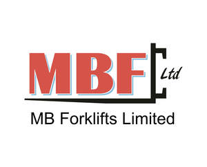

Trade Mark Journal No.2025/039 26 September 2025
UK00004233487 14 July 2025 (12,39)

- Class 12
- Forklift trucks; Loaders [fork-lift trucks]; Stacking machines [fork-lift trucks]; All-terrain fork-lift trucks; All-terrain fork-lift trucks having a telescopic arm; Electric trucks [vehicles]; Trucks; Electric lift trucks; Lift trucks; Industrial trucks; Truck tractors; Electric tractors [vehicles]; Trucks incorporating a crane; Tractors for freight; Trailers for use with trucks; Trolleys [vehicles]; Motorized tailgates for trucks; Towing trucks; Casters for trolleys [vehicles]; Dollies [hand trucks]; Dumper trucks; Forklifts, and structural parts therefor; Towing tractors; Casters for carts [vehicles]; Casters for trolleys [vehicles] [carts (Am.)]; Casters for trolleys [vehicles] carts [Am.]; Trucks for transporting; Pallet transfer trucks; Tyres for trucks; Mechanical handling trucks; Tractors; Semi-trailers; Loader swivel axles for vehicles; Racks for vehicles; Electric motors for wheelchairs; Undercarriages for vehicles; Axles for vehicles; Electric reach trucks; Self-loading vehicles; Trailer trucks; Wheeled vehicles; Self-propelled loading vehicles; Trailers [vehicles]; Transportation trucks; Vans [vehicles]; Self-propelled electric vehicles; Dollies [trolleys]; Scooters [vehicles]; Luggage trucks; Trucks (Luggage -); Industrial vehicles; Hydraulic connectors for vehicles; Lifts (Tailboard -) [parts of land vehicles]; Tailboard lifts [parts of land vehicles]; Propellers for vehicles; Hand trucks; Electric motors for two-wheeled vehicles; Tilt trucks; Canopies for pick-up trucks; Rotary hydraulic motors for land vehicles; Tractor trailers; Trucks incorporating racks; Couplings (Non-electric -) for towing trailers; Pneumatic tires for automobiles; Lifting cars [lift cars]; Equipment trailers.
- Class 39
- Rental of fork-lift trucks; Leasing of trucks; Winching of vehicles; Rental of vehicles equipped with lifting platforms; Hire of pallet cages; Rental of trucks; Truck hauling; Loading of trucks; Rental of pallets; Leasing of lorries.
MB Forklifts Ltd